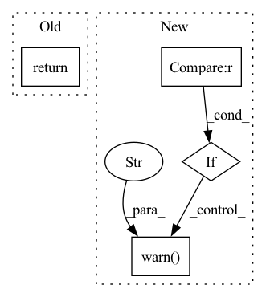

Pattern ID :5902
Before Change
_WARNED_ABOUT_AS_PANDAS = True
if as_pandas:
return dataset.to_pandas()
return dataset
def dataset_metrics(self, name: str) -> List[MetricInfo]:After Change
>>> import rubrix as rb
>>> dataset = rb.load(name="example-dataset")
if as_pandas is False :
warnings.warn(
"The argument `as_pandas` is deprecated and will be removed in a future version. "
"Please adapt your code accordingly. " ,
FutureWarning,
)
elif as_pandas is True:
raise ValueError(
"The argument `as_pandas` is deprecated and will be removed in a future version. "
"Please adapt your code accordingly. ",In pattern: SUPERPATTERN
Frequency: 8
Non-data size: 4
Instances Fragment ID: 20797196
Project Name: recognai/rubrix
Commit Name: 5f3b2a00f36f4dedd4aaf636900798fd14698978
Time: 2022-06-07
Author: francisco@recogn.ai
File Name: src/rubrix/client/api.py
M Class Name: Api
N Class Name: Api
M Method Name: load(6)
N Method Name: load(6)
M Parent Class:
N Parent Class:
M File Name: src/rubrix/client/api.py
N File Name: src/rubrix/client/api.py
M Start Line: 399
M End Line: 473
N Start Line: 398
N End Line: 472
Before Change
assert self.features_extractor is not None, "No features extractor was set"
preprocessed_obs = preprocess_obs(obs, self.observation_space, normalize_images=self.normalize_images)
return self.features_extractor(preprocessed_obs)
def _get_constructor_parameters(self) -> Dict[str, Any]:
After Change
the features extractor of the policy is used.
:return: The features
if features_extractor is None :
warnings.warn(
(
"When calling extract_features(), you should explicitely pass a features_extractor as parameter. "
"This will be mandatory in Stable-Baselines v1.8.0"
) ,
DeprecationWarning,
)
features_extractor = features_extractor or self.features_extractor
assert features_extractor is not None, "No features extractor was set"
preprocessed_obs = preprocess_obs(obs, self.observation_space, normalize_images=self.normalize_images) Fragment ID: 20797198
Project Name: dlr-rm/stable-baselines3
Commit Name: 2cfcec4f50f058f79b163becec17ed4a4dd986ce
Time: 2022-12-20
Author: alexpasquali98@gmail.com
File Name: stable_baselines3/common/policies.py
M Class Name: BaseModel
N Class Name: BaseModel
M Method Name: extract_features(3)
N Method Name: extract_features(2)
M Parent Class: nn.Module
N Parent Class: nn.Module
M File Name: stable_baselines3/common/policies.py
N File Name: stable_baselines3/common/policies.py
M Start Line: 127
M End Line: 129
N Start Line: 121
N End Line: 142
Before Change
else:
writer = get_memory_writer("memory_raw")()
data = writer.write("", arr) // key is ignored by in memory writers
return TemporalArray(
array=Array(
storage_type=writer.name,
storage_key=data,After Change
)
// Sanity check -- can help detect issues with start/offset in long-recording data.
if out.shape == [0] :
warnings.warn(
"A TemporalArray with shape [0] encountered. If this is not expected and "
"you"re working with long-recording data, make sure you did set the "start" "
"attribute properly."
)
return out
Fragment ID: 20797195
Project Name: lhotse-speech/lhotse
Commit Name: 63df3cb4ce86f51110dbd5454052388a8612586f
Time: 2022-03-15
Author: petezor@gmail.com
File Name: lhotse/array.py
M Class Name: TemporalArray
N Class Name: TemporalArray
M Method Name: move_to_memory(3)
N Method Name: move_to_memory(3)
M Parent Class:
N Parent Class:
M File Name: lhotse/array.py
N File Name: lhotse/array.py
M Start Line: 249
M End Line: 264
N Start Line: 250
N End Line: 275
Before Change
assert masked_lm_labels is None
assert lm_labels is None
return outputs // prediction_scores, (hidden_states), (attentions)
After Change
kwargs (:obj:`Dict[str, any]`, optional, defaults to `{}`):
Used to hide legacy arguments that have been deprecated.
if "masked_lm_labels" in kwargs :
warnings.warn(
"The `masked_lm_labels` argument is deprecated and will be removed in a future version, use `labels` instead." ,
FutureWarning,
)
labels = kwargs.pop("masked_lm_labels")
assert "lm_labels" not in kwargs, "Use `BertWithLMHead` for autoregressive language modeling task."
assert kwargs == {}, f"Unexpected keyword arguments: {list(kwargs.keys())}."
Fragment ID: 20797194
Project Name: awslabs/mlm-scoring
Commit Name: 9cab61e6774bcc4983f7117f1a280c334f3e68b5
Time: 2020-10-10
Author: julsal@amazon.com
File Name: src/mlm/models/bert.py
M Class Name: BertForMaskedLMOptimized
N Class Name: BertForMaskedLMOptimized
M Method Name: forward(14)
N Method Name: forward(12)
M Parent Class: BertForMaskedLM
N Parent Class: transformers.BertForMaskedLM
M File Name: src/mlm/models/bert.py
N File Name: src/mlm/models/bert.py
M Start Line: 151
M End Line: 218
N Start Line: 156
N End Line: 222
Before Change
def max_send_depth_for_stage(self, stage_id: int) -> int:
max_send_depth_dict_a = self.max_send_depth_dict(is_activations=True)
max_send_depth_dict_g = self.max_send_depth_dict(is_activations=False)
return max(max_send_depth_dict_a[stage_id], max_send_depth_dict_g[stage_id])
@property
def pipeline_depth(self) -> int:After Change
max_send_depth_dict_a = self.max_send_depth_dict(is_activations=True)
max_send_depth_dict_g = self.max_send_depth_dict(is_activations=False)
res = max(max_send_depth_dict_a[stage_id], max_send_depth_dict_g[stage_id])
if res > 1 :
warnings.warn(f"Stage: {stage_id} has max_send_depth={res}. This means holding multiple ({res}) versions of activations/gradients in memory" )
return res
@property
def pipeline_depth(self) -> int: Fragment ID: 20797205
Project Name: saareliad/ftpipe
Commit Name: 79ef5dd2cd819e23a6c1f57ec7350200c13ca62e
Time: 2020-09-19
Author: saareliad@campus.technion.ac.il
File Name: models/simple_partitioning_config.py
M Class Name: PipelineConfig
N Class Name: PipelineConfig
M Method Name: max_send_depth_for_stage(2)
N Method Name: max_send_depth_for_stage(2)
M Parent Class:
N Parent Class:
M File Name: models/simple_partitioning_config.py
N File Name: models/simple_partitioning_config.py
M Start Line: 230
M End Line: 232
N Start Line: 230
N End Line: 235
Before Change
psnr, ssim = cal_psnr_and_ssim(sr_image, hr_image)
return psnr, ssim
def main() -> None:After Change
sr_image = skimage.io.imread(sr_path)
hr_image = skimage.io.imread(hr_path)
if sr_image.shape != hr_image.shape :
warnings.warn("Image size not equal! Possible errors in the calculation of the spectrum!" )
if sr_image.shape[0] != sr_image.shape[1]:
warnings.warn("Image width and height is not equal! Possible errors in the calculation of the spectrum!")
psnr, ssim = cal_psnr_and_ssim(sr_image, hr_image) Fragment ID: 20797204
Project Name: lornatang/srgan-pytorch
Commit Name: 08a73cd532f7a2d3eb7b7df6d260bac917492bca
Time: 2021-09-02
Author: liuchangyu1111@gmail.com
File Name: validate.py
M Class Name: AnonimousClass
N Class Name: AnonimousClass
M Method Name: image_quality_assessment(2)
N Method Name: image_quality_assessment(2)
M Parent Class:
N Parent Class:
M File Name: validate.py
N File Name: validate.py
M Start Line: 68
M End Line: 68
N Start Line: 125
N End Line: 136
Before Change
gt_seg_map = mmcv.imread(
seg_map, flag="unchanged", backend="pillow")
gt_seg_maps.append(gt_seg_map)
return gt_seg_maps
def get_classes_and_palette(self, classes=None, palette=None):
Get class names of current dataset.After Change
def get_gt_seg_maps(self, efficient_test=None):
Get ground truth segmentation maps for evaluation.
if efficient_test is not None :
warnings.warn(
"DeprecationWarning: ``efficient_test`` has been deprecated "
"since MMSeg v0.16, the ``get_gt_seg_maps()`` is CPU memory "
"friendly by default. " )
for idx in range(len(self)):
ann_info = self.get_ann_info(idx)
results = dict(ann_info=ann_info) Fragment ID: 20797201
Project Name: rayguan97/ganav-offroad
Commit Name: 35e8f538bedb93a3c3437fbea76ffff4fd9e7c96
Time: 2022-07-26
Author: rayguan@terpmail.umd.edu
File Name: mmseg/datasets/custom.py
M Class Name: CustomDataset
N Class Name: CustomDataset
M Method Name: get_gt_seg_maps(2)
N Method Name: get_gt_seg_maps(2)
M Parent Class: Dataset
N Parent Class: Dataset
M File Name: mmseg/datasets/custom.py
N File Name: mmseg/datasets/custom.py
M Start Line: 235
M End Line: 244
N Start Line: 255
N End Line: 266
Before Change
for ann in anns:
ann["valid_area"] = meta["valid_area"]
return image, anns, meta
def center_pad(self, image, anns):
w, h = image.sizeAfter Change
self.target_size = target_size
def __call__(self, image, anns, meta, mask_miss=None):
if mask_miss is not None :
warnings.warn("mask_miss transformation is not implemented" )
image = PIL.Image.fromarray(image)
meta = copy.deepcopy(meta)
anns = copy.deepcopy(anns)
Fragment ID: 20797202
Project Name: hellojialee/offsetguided
Commit Name: d5e2d5aa3ec9afb8ed5fe99acea5a7020d39da96
Time: 2020-08-08
Author: ustclijia@gmail.com
File Name: transforms/pad.py
M Class Name: CenterPad
N Class Name: CenterPad
M Method Name: __call__(5)
N Method Name: __call__(4)
M Parent Class: Preprocess
N Parent Class: Preprocess
M File Name: transforms/pad.py
N File Name: transforms/pad.py
M Start Line: 19
M End Line: 32
N Start Line: 19
N End Line: 33